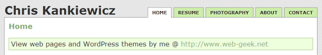

Creating Dynamic Menus with PHP and CSS
Want to pep up your web page with some dynamic menus? Here’s a simple solution that only requires a few lines of PHP and CSS.
UPDATE (11/1/08): Simplified the header code and edited the syntax of the list element echo code.
The PHP
Add the following to the top of your page (before the DOCTYPE or HTML tag).
<?php
// Get current page file name
$page = basename($_SERVER["PHP_SELF"]);
?>
Then add the following to your menu item where you want the class designation to show up.
Each link should have this piece of code in it. Make sure you replace
index.php with the appropriate file name for the page. Example:
<div id="navigation">
<ul>
<li><a href="index.php" <?php if ($page == "index.php") echo 'class="current"' ?>>Home</a></li>
<li><a href="resume.php" <?php if ($page == "resume.php") echo 'class="current"' ?>>Resume</a></li>
<li><a href="photography.php" <?php if ($page == "photography.php") echo 'class="current"' ?>>Photography</a></li>
<li><a href="about.php" <?php if ($page == "about.php") echo 'class="current"' ?>>About</a></li>
<li><a href="contact.php" <?php if ($page == "contact.php") echo 'class="current"' ?>>Contact</a></li>
</ul>
</div>
Note: the 2 chevrons (>>) at the end are on purpose. One closes the PHP tag
the other closes the a tag.
The CSS
Lastly, add the following element to your style sheet and style it as you please.
#navigation ul li a.current {
background-color: #FFF;
border-bottom: 1px solid #FFF;
}
This process will result in the following:
